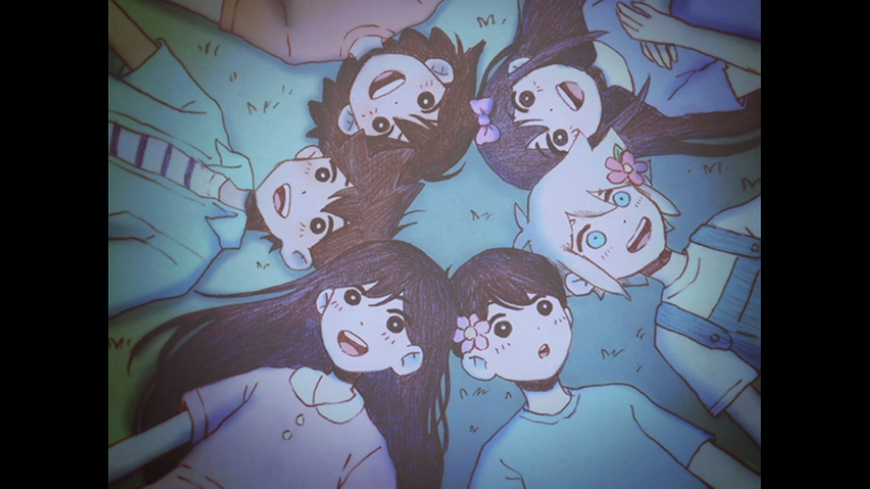
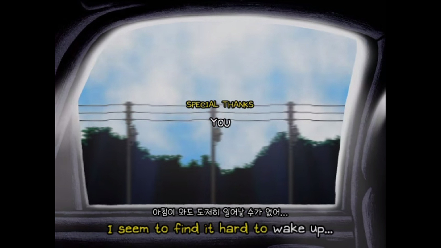

33시간정도 했습니다. 오늘 엔딩을 2가지 봤습니다. 개인적으로 너무나도 훌륭한 초초초초초갓겜이기 때문에 리뷰를 자세히 써보고 싶을 정도입니다.
대사 하나 하나 맘에 들어서 스샷만 몇 백장 찍은 것 같습니다. 대사가 정말 너무 좋았어요...
겜추천글들을 쓸 때 방송용 게임뿐 아니라 다들 한 번쯤 해보시길 바라는 게임들을 추천하는데 오모리는 전국민이 하길 바라는 게임입니다.
저뿐 아니라 모두들 크고 작은 힘든 일들이 있으실텐데 이 게임이 하나의 편안한 휴식처가 되어줄 것 같습니다.
오늘은 인상깊었던 스샷들만 남기고 가겠습니다.
마지막 장에 돌입하니 게임 시작 화면이 바뀝니다.
교수님이 말씀하신 엔딩(주인공 추락사)과는 다르지만 베드 엔딩입니다...ㅜㅜㅜㅜㅜㅜ


주인공(써니, shm0888, 오모리)과 친누나인 마리누나, 그리고 히로(형), 켈(동생) 형제들, 오브리(여자아이), 바질(화관)너무 귀여워서 찍었습니다.
주인공이 물을 무서워했던 이유.
혼자가 된 주인공.
커버린 친구들.
굿 엔딩 달성.
굿 엔딩 후 바뀐 시작화면.

후원댓글 10개
댓글 10개 ▼